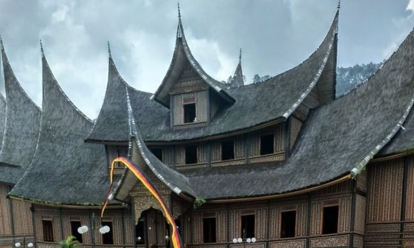
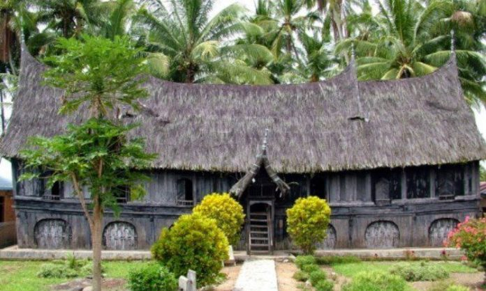
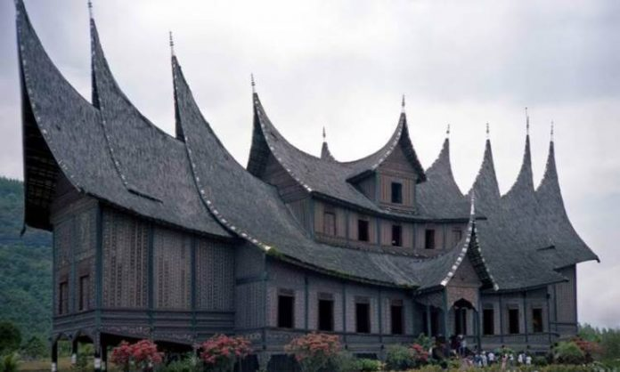
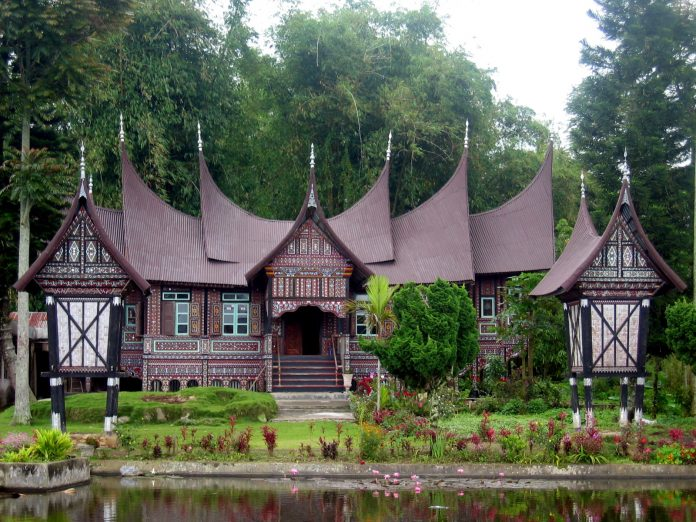

BUDAYA PADANG
Padang adalah ibu kota provinsi Sumatra Barat, Indonesia. Sebagai salah satu kota terbesar di Sumatra Barat, Padang memiliki sejarah dan budaya yang kaya. Berikut adalah beberapa aspek yang dapat menjelaskan lebih lanjut tentang Kota Padang:

Rumah Batingkek
Batingkek dalam Bahasa Indonesia artinya adalah bertingkat. Sehingga rumah gadang batingkek berarti rumah gadang yang gonjongnya bertingkat – tingkat. Namun, saat ini rumah gadang batingkek sudah jarang ditemui.

Gonjong Ampek Baanjuang
Sesuai namanya yakni ampek yang berarti empat dalam Bahasa Indonesia, maka rumah adat Padang ini memiliki empat buah gonjong di bagian kanan dan kirinya. Jumlah ruangan di rumah ini berjumlah lebih dari 7 buah. Rumah ini pun memiliki anjung di bagian kanan dan kirinya.

Gonjong Limo
Rumah adat Padang yang satu ini memiliki ciri khas penambahan gonjong di bagian kanan dan kiri. Rumah gadang Gonjong Limo banyak ditemukan di area Payakumbuh.

Surambi Papek
Rumah gadang yang satu ini memiliki keunikan yakni memiliki pintu masuk lewat belakang sehingga jika ingin bertamu, kita harus masuk melalui bagian belakang rumah. Namun seiring dengan perkembangan zaman, rumah gadang surambi papek pun kini memiliki pintu depan.

Gonjong Anam
Rumah adat Sumatera Barat yang satu ini bisa dikatakan lebih modern dibandingkan dengan rumah gadang lainnya. Selain itu, rumah gonjong anam pun memiliki lebih banyak jendela dengan tujuan agar lebih banyak cahaya matahari yang bisa masuk.

Gajah Maharam
Rumah adat Padang gajah maharam adalah rumah yang termasuk ke dalam kategori rumah mewah. Ada syarat yang harus dipenuhi untuk membangun rumah ini, misalnya rumah harus menghadap Utara. Untuk membangun rumah adat ini, dibutuhkan 30 tiang penopang dan tiang – tiang tersebut disinyalir membuat rumah ini tahan gempa.